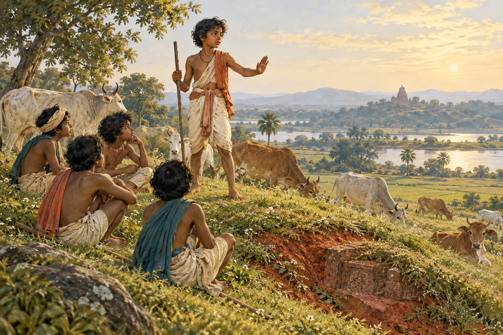
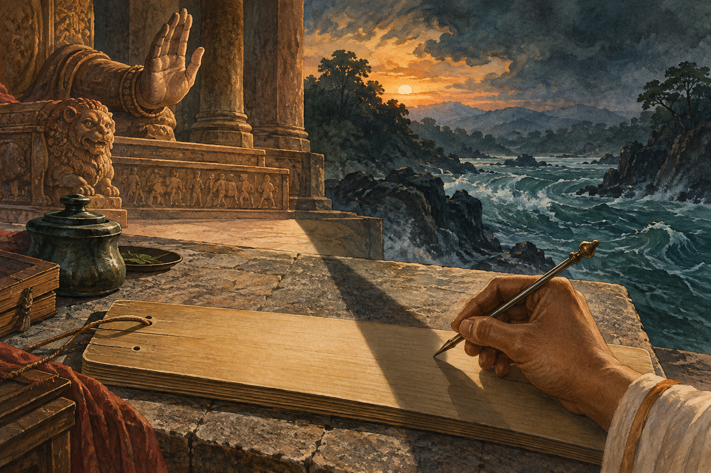
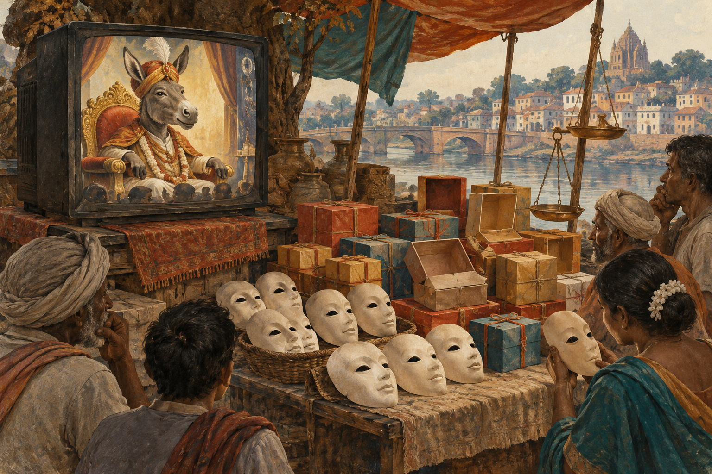

Pravakar Satapathy’s first book
A poet looks
at power.
An Odia journey through the throne, the people around it, and the lives that continue beneath its shadow.
Written during a period when the poet was active in politics, these sixty-eight poems bring myth, history and public life into conversation. Their connections reach from the court to the village, from the language of authority to the questions of an ordinary person.


The poet & his world
Political life.
A poet’s searching eye.
Pravakar Satapathy wrote his first book while actively involved in politics. He was also a poet drawing connections: between rulers and the ruled, remembered stories and contemporary life, the promise of change and the persistence of power.
The throne gives those encounters a recurring place to gather. Across the poems, its meaning shifts with the people who seek it, serve it, question it or live in its shadow.
ପ୍ରଭାକର ଶତପଥୀ
Meet the poetA journey in images & verse
Five glimpses into the book
Read the original Odia words alongside a visual and English narrative of the world they open.

01 From poem 01
Beneath an ordinary field
Before the throne appears, there is grass, cattle and a familiar patch of earth. Authority enters this everyday world almost unnoticed. The opening asks us to look again at the ground on which a ruler stands.
ସବୁ ଠିକ୍ ଥିଲା-
ଗାଈ ଚରୁଥିଲେ
ସାରା ପଡ଼ିଆରେ,Read this poem

02 From poem 08
An old epic, an unfinished question
The poem turns to the world of the Mahabharata, looking beyond territory to the choices made in the presence of power. The past becomes a way of asking what a person will accept, resist or help to preserve.
ହସ୍ତିନା କି ଇଂଦ୍ରପ୍ରସ୍ଥ
ସାମ୍ରାଜ୍ୟ କି ସୂଚ୍ୟଗ୍ର ମେଦିନୀ
ମହାକାବ୍ୟର ଅସଲ ରହସ୍ୟ ନଥିଲା ।Read this poem
03 From poem 15
A new name. The same seat.
A change of name or outward appearance does not settle the question of rule. The poem looks for continuity beneath transformation: what survives when the figure on the throne seems to have changed?
ଚଂଡାଶୋକ ଅବା ଧର୍ମାଶୋକ-
ମହାରାଜାଂକ ନାମ ହୋଇଥିଲେ
ଯଥେଷ୍ଟ ଯଥେଷ୍ଟ!Read this poem

04 From poem 65
When conviction becomes performance
Persuasion, commerce and public spectacle meet in a crowded marketplace. Moral language becomes something that can be displayed and sold. The poem’s satire turns from the stage towards the audience watching it.
ତୁ କେଉଁ ମାଧବରେ
ଅଛୁଆଁ ଛିଡ଼ା କରାଇ ଦେଲୁ ଆଣି ମୋତେ
ଏ ଦୁଇ ଆଗ୍ନେୟଗିରିର ମଝିରେRead this poem

05 From poem 68
The beginning returns
Gates open and the ordinary world begins to breathe again. Yet the mound waits. The closing poem brings us back towards the first, holding hope beside the possibility that the old pattern may return.
ଶେଷରେ ଗୋଟାଏ ବ୍ରାହ୍ମ ମୁହୁର୍ତରେ
ମଦିଂର ଦରଜା ପରି ଫିଟିଗଲା
ସବୁ ଜେଲଖାନାର ଫାଟକRead this poem
Enter the book